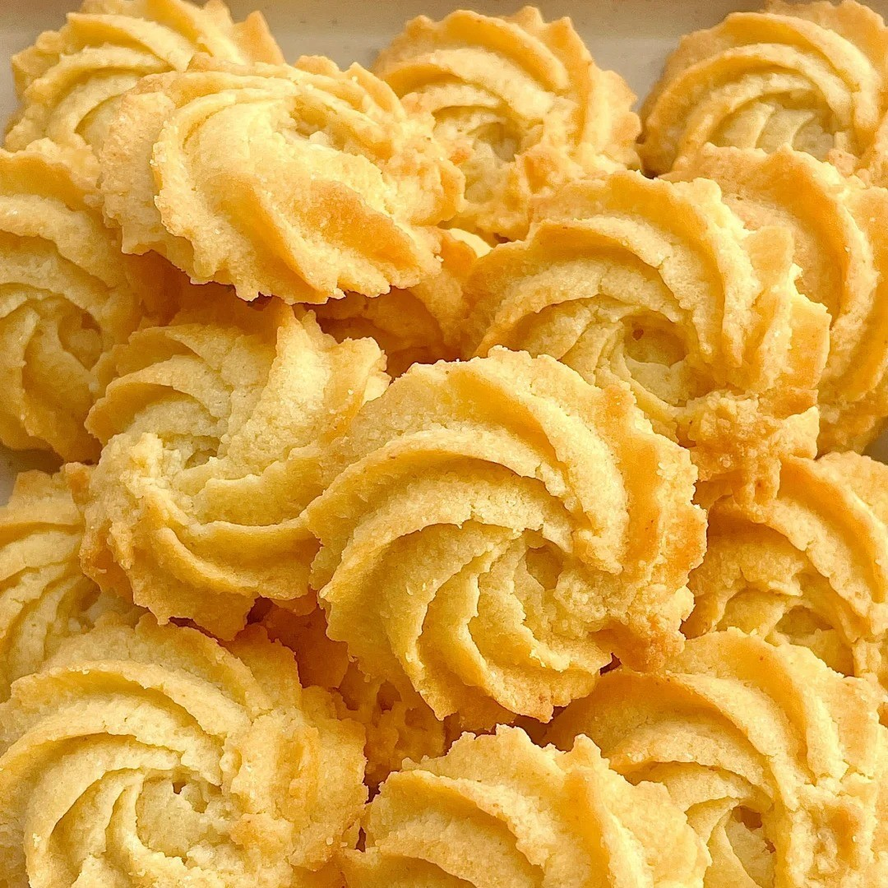
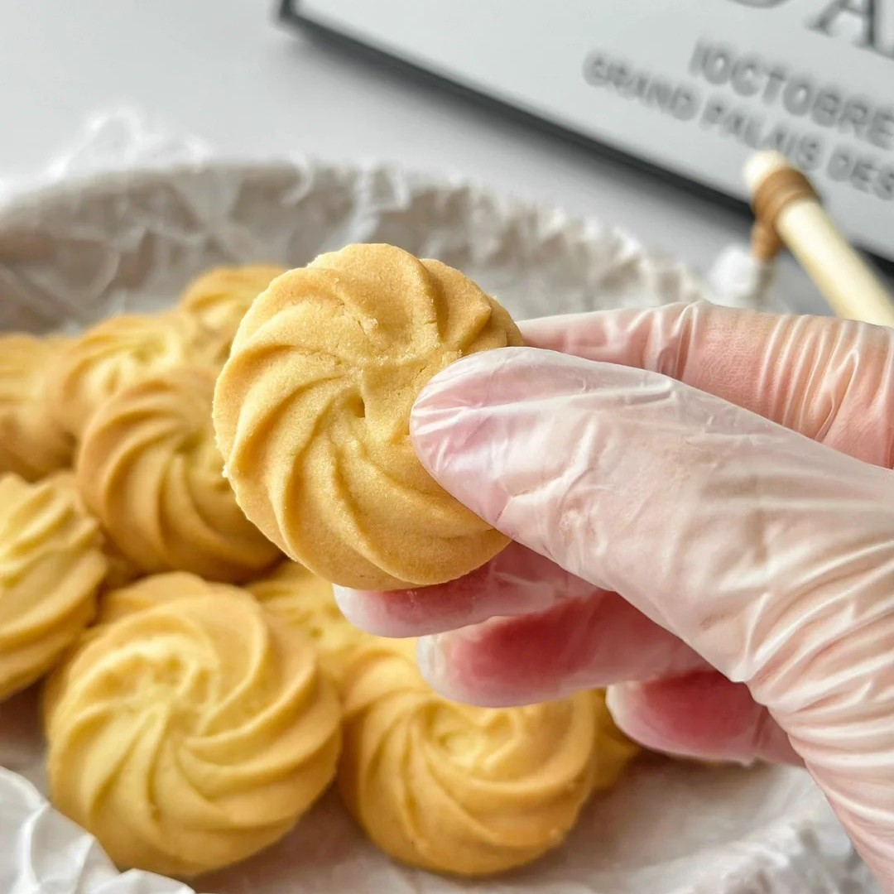

黄油曲奇



丹麦黄油曲奇是一种以黄油、低筋面粉、细砂糖为主料，辅以糖粉、鸡蛋、香草精等制作的烘焙食品，其成品以酥脆口感与浓郁黄油香为特点。制作工艺强调面团状态控制，需平衡延展性与湿度：混合糖类可稳定花纹形态，黄油打发程度影响纹理清晰度；湿度不足时需添加牛奶调整，烘烤过程不额外加水，通过原料配比与操作手法保证品质。该食品的制作方法在原料配比及工艺细节上存在多样性。核心原料始终以黄油、低筋面粉、糖类为基础配方，部分食谱通过添加蛋黄、淡奶油或蔓越莓等辅料形成差异。标准化流程包含软化黄油、糖油打发、粉类混合、裱花成型等关键步骤，烘烤温度普遍设定在160-180℃区间，烤制时间依烤箱特性调整。不同版本食谱在面团冷藏定型、装饰技法及边角料处理等方面呈现工艺演变，但均以维持酥脆口感为核心目标。
制作方法：